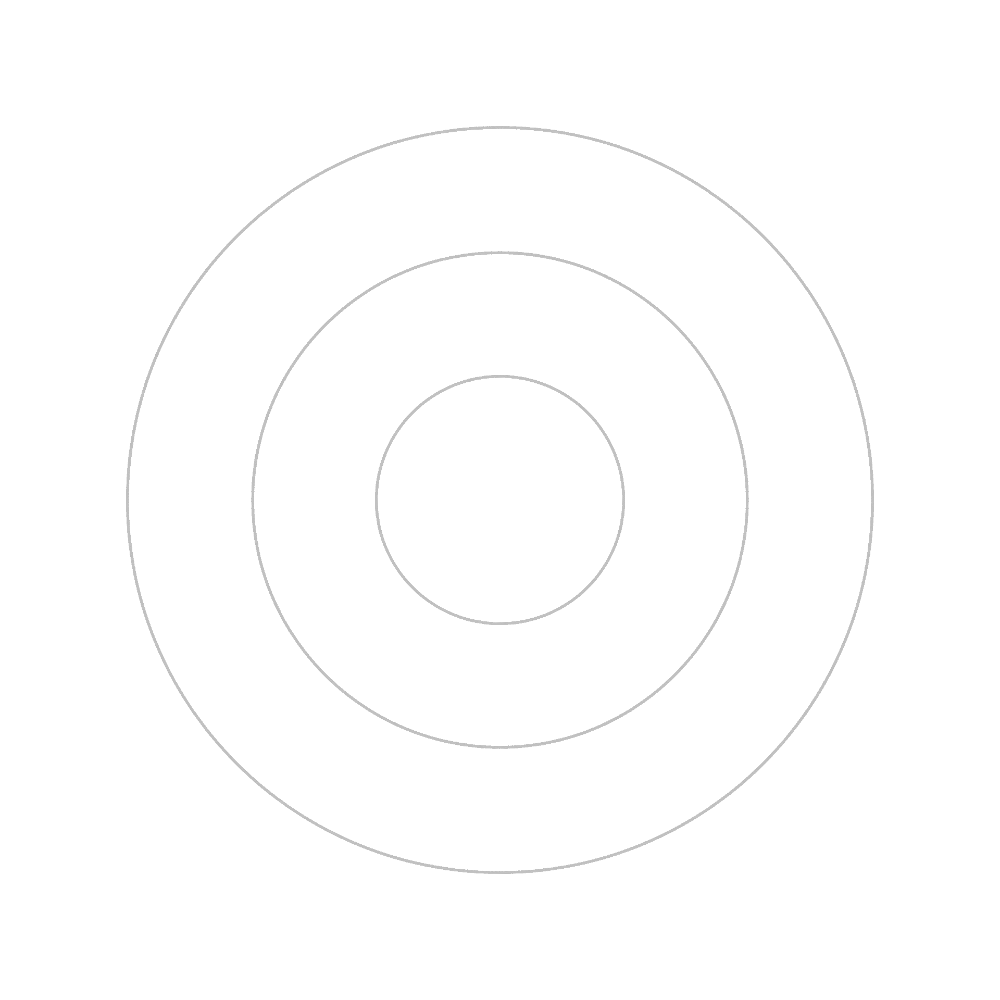

Numbers
Addition
Multiplication
Complex Operations
One of the key moments came from exploring the definition of the
circle as a set of points equidistant from a center. This led to
understanding the circumference as a number line wrapped around
itself, making it the base unit of the system.
The point and the circle are also fundamental forms in data
visualization, used in pie charts and scatter plots. Their
ability to represent multiple layers of information visually
made them ideal for displaying numbers.
A key conceptual reference is Wassily Kandinsky's
Point and Line to Plane (1926), where the point
is described as the smallest unit of visual expression. Following
this idea, numbers in the system are represented by circles.
Every number is drawn as a set of concentric circles — one ring for each power of ten it needs. The more rings you see, the larger the number. They read from the inside out: the innermost ring is the units, the next is the tens, then the hundreds, and so on.

Each ring is split into ten equal portions, one for every digit from 0 to 9. A tick mark fills in up to the digit's own value, so you can read exactly which number that ring holds.

A negative number is drawn the same way as its positive counterpart, but its outermost ring turns into a dashed line. The dash marks the number as sitting on the other side of zero, while the minus sign at the center confirms it.